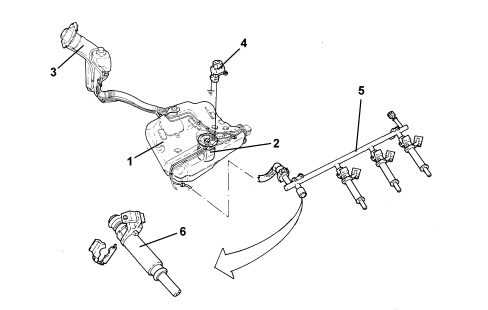

INTRODUCTION - FUEL TANK AND PIPES
- Path
- Descriptions > 10 ENGINE > 1040 FUEL TANK AND PIPES > INTRODUCTION - FUEL TANK AND PIPES
- Kind
- system description
- Applies to
- engines: 1.8; all production periods
- Interactive page
- https://sloeber94.github.io/elrnDB-fCrm/en/#/194002259
Applies to: engines: 1.8; all production periods
SPECIFICATIONS
The fuel supply system is the returnless type, i.e. with a single connecting pipe between the fuel tank and the engine.
This makes it possible to:
- minimize the possibility of the vehicle catching fire in case of an accident.
- reduce fuel vapour emissions to the atmosphere.
The fuel tank is located in front of the rear axle. It is made out of plastic with high mechanical strength.
The fuel pump is enclosed in the cradle that also incorporates:
- the pressure regulator
- the level gauge
- the filter.

1. Fuel tank
2. Submerged fuel assembly complete with level gauge control
3. Fuel filler pipe
4. Inertia switch
5. Fuel distribution manifold
6. Injector